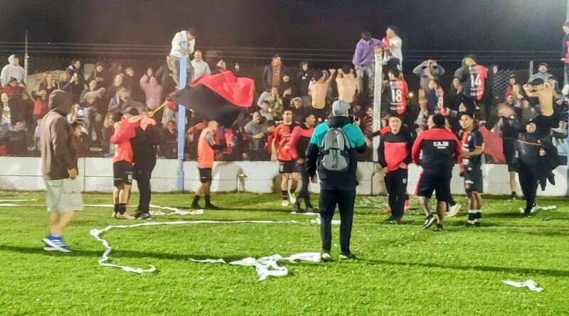

El Club Jorge Newbery es el Campeón 2025 del Fútbol de Rojas El Huracán es el Subcampeón
02/12/2025La definición de la Finalisima por el trofeo 🏆 » Luis Omar Polaco Alvarado», se extendió a los penales tras finalizar los 90 empatados 1 a 1
Leer más